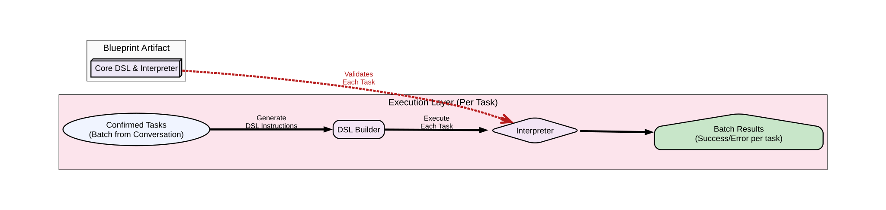

1 / 5
Use ← → arrow keys to navigate
LLMs and DSLs (Pros and cons)
Domain-Specific Languages (DSLs)
✓ Precise & Unambiguous
✓ Verifiably Correct
✓ Source of Truth for Business Logic
⚠ Barrier to Entry:
Requires learning a specific syntax
Large Language Models (LLMs)
✓ Intuitive & Conversational
✓ Flexible Natural Language Input
✓ Accessible to Everyone
⚠ Barrier to Trust:
Probabilistic and cannot guarantee correctness
Our Approach: Make DSLs Conversational
Instead of trying to "fix" LLMs, we enhance existing, reliable DSLs with a natural language interface.
The DSL remains the source of truth; the LLM acts only as a translator.
Process unstructured input like emails, documents, and conversations
Example: From Email to DSL
Our system can extract multiple structured tasks from unstructured input:
📧 Unstructured Input (Email)
"Hi Team,
I wanted to let you know that we've secured
a new venue with four rooms:
Zimmer X1 – 10 seats, no AV facilities
Zimmer X2 – 40 seats, fully equipped with AV
Zimmer X3 – 20 seats, AV available
Zimmer X4 – 60 seats, AV and stage setup
This gives us a lot more flexibility for
planning events...
Best,
Sarah"
✨ Extracted DSL Instructions
Each extracted instruction goes through the same validation and execution pipeline!
The System Blueprint & Flow
From unstructured input to validated execution
Processing Pipeline:
Unstructured Input: Email, document, or conversation
1. Conversation Layer:
• Extracts ALL actionable tasks from input
• Structures each task independently
• Confirms batch with user if needed
2. Execution Layer (per task):
• Converts each to formal DSL
• Validates against business rules
• Executes approved actions only

Zoom in with Ctrl/Cmd + mouse wheel if needed to read diagram details
Handling Incomplete & Invalid Tasks

Zoom in with Ctrl/Cmd + mouse wheel if needed to read diagram details
Example: Mixed Valid/Invalid Input
Unstructured Input:
"Set up the new conference room with
50 seats and schedule a talk there."
System Extracts:
Task 1: create_venue [missing name] ❓
Task 2: schedule_talk [missing details] ❓
Conversation Manager:
"I found 2 tasks. I need more info:
• What's the room name?
• Talk title, speaker, and time?"
Smart Batch Processing
From our email example:
✅ Tasks 1-3: Valid → Execute
❌ Task 4: User lacks permission
System Response:
"Successfully created:
• Zimmer X1 (10 seats)
• Zimmer X2 (40 seats, AV)
• Zimmer X3 (20 seats, AV)
⚠ Cannot create Zimmer X4:
Venues >50 seats require admin role"
Execution Layer
Every extracted task - whether from email, document, or query - goes through strict validation.

Zoom in with Ctrl/Cmd + mouse wheel if needed to read diagram details
Batch Execution Example
Input: 4 confirmed tasks from email
DSL Builder (per task):
• Task 1 → DSL instruction 1
• Task 2 → DSL instruction 2
• Task 3 → DSL instruction 3
• Task 4 → DSL instruction 4
Interpreter (validates each):
• ✅ Instructions 1-3: Execute
• ❌ Instruction 4: Reject (permissions)
Result: 3 venues created, 1 error returned